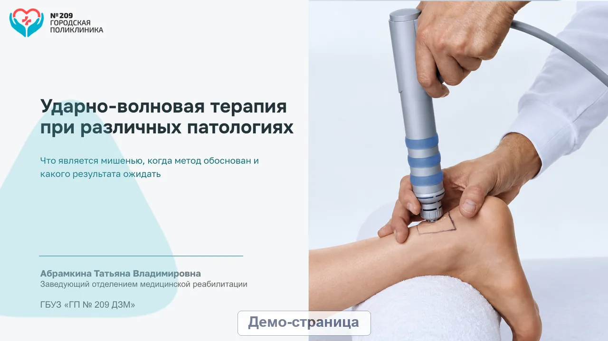

УВТ
Материалы проекта
Защищённый просмотр
Доступ только для согласованного просмотра
W
Доклад
Word · 9 страниц
P
Презентация
PowerPoint · 32 слайда
Файл
Главная
Вставка
Макет
Рецензирование
Только чтение
Calibri
12
Ж
К
Ч
Абзац
Доклад
Страница 1 из 9
Файл
Главная
Вставка
Дизайн
Переходы
Показ слайдов
Только чтение

‹
Слайд 1 из 32
›
На весь экран
Копирование отключено для демонстрационной версии